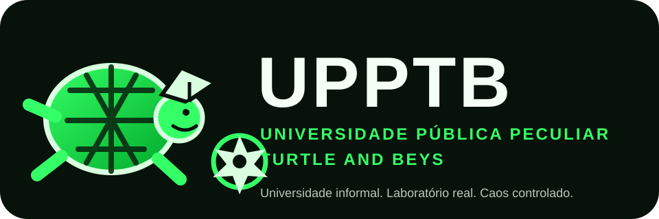

Fundamentos
Variáveis, lógica, inglês e QA começaram a ser reconstruídos passo por passo.
Identidade HIGH · Severidade ULTRA TURTLE
A UPPTB mistura QA, programação, inglês, Turtle Step, Beyblade, projetos reais e uma quantidade administrativamente irresponsável de lore.

Fóssil fundador · não corrigir
Se uma refatoração futura “melhorar o inglês” deste texto, a refatoração falhou no requisito.
Sobre o fundador
A UPPTB nasceu do jeito que os projetos mais peculiares costumam nascer: alguém começou estudando fundamentos, percebeu que exemplos genéricos eram chatos e decidiu transformar o próprio processo de aprendizagem em produto.
Kauan atua com cabeça de QA, organiza requisitos como PO quando necessário e usa projetos reais para testar o que aprende. O objetivo aqui não é parecer uma universidade de verdade. É registrar evolução de verdade.
Nota institucional: reitor, aluno, QA, PO, comitê de crise e departamento de decisões questionáveis podem ser a mesma pessoa.
Origem do caos
Variáveis, lógica, inglês e QA começaram a ser reconstruídos passo por passo.
Aprender, praticar, consolidar e avançar virou método. Depois o método cresceu para projetos e vida.
Const, let, if e else ficaram mais fáceis quando o exemplo tinha blader, arena e derrota histórica do Robin.
Vieram requisitos, gates, arquitetura, QA e documentação. O absurdo permaneceu. A implementação ficou séria.
O conteúdo a seguir pode conter: tartarugas com autoridade acadêmica inexistente, departamentos sem orçamento, sátiras contra burocracia de projeto, commits emocionalmente instáveis e a suspeita recorrente de que Robin perdeu de novo.
Arquivo visual de decisões questionáveis

“Turtle Step não mede velocidade. Mede estabilidade.”
Metodologia oficialmente mais lenta que a ansiedade.“Robin perdeu de novo.”
Teste regressivo aprovado em múltiplas temporadas emocionais.“Todos os departamentos são o mesmo cara.”
Redução de custos levada a níveis acadêmicos duvidosos.“Uma evidência plausível não é necessariamente válida.”
Departamento de QA estragando a festa desde o primeiro gate.“O norte dá direção. A constância cobre a distância.”
Turtle Step V3, agora com menos pressa e mais quilômetros.“Universidade imaginária. Bug real.”
Credenciamento zero. Critério de aceite obrigatório.Beyblade Lab · JavaScript
Sem trocar o contexto toda aula. O conceito muda. O universo continua.
Algo que não deve ser reatribuído.
const game = "Beyblade X";
console.log(game);Algo que pode variar durante o fluxo.
let blader = "Robin";
blader = "Multi";
console.log(blader);Uma decisão baseada em condição.
let robinWins = 0;
if (robinWins > 0) {
console.log("Evento histórico.");
} else {
console.log("Robin perdeu de novo.");
}Saída visível para entender o que o programa está fazendo.
const team = "Persona";
let currentBlader = "Robin";
console.log(team + " entra com " + currentBlader);English Department
Correção rígida de gramática. Forma, auxiliar, concordância e estrutura entram na mesa.
Conversa natural primeiro. Correções consolidadas no final para não matar a fluidez.
Modo técnico para negação, auxiliares, tempos verbais, conditionals e transformação de frases.
Modo máximo de rigor. Gramática, estrutura, escolha de palavras e naturalidade são corrigidas sem anestesia acadêmica.
I am study English.→I am studying English.I study program every day.→I study programming every day.I hate study programming of beginning.→I hate studying programming from the beginning.O objetivo não é esconder erro antigo. É deixar visível que ele foi identificado, entendido e corrigido.
Forbidden Turtle Archive
Escopo, banco de frases, benchmark, arquitetura e o arquivo proibido vivem aqui como evidência histórica do projeto.
Terminal institucional
$ upptb status
reitoria ............ online
qa .................. desconfiado
robin ............... provavelmente perdeu
multi ................ reborn
caos ................. controlado
frontend ............. finalmente começou